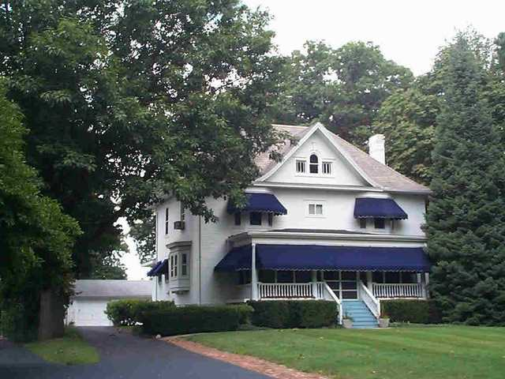

1310 E. Washington

- Robert and Lelia Cowles Residence (1905)
- Victorian Colonial/Planing Mill Modern Center Hall with oriels on two facades
- Thin Doric columns, Palladian window in Romanesque form roofline and kick roof
- Cowles was the Business Agent of Sarah Davis Swayne (daughter of Judge David Davis)
- Tidbits about Sarah Davis Swayne:
- had huge land holdings
- was one of 2 heirs
- married twice
- she had her own business manager, which meant she was rather wealthy